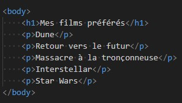

Exercice 1

Faites en sorte que le poème suivant eqst un affichage plus structurés. A chaque poncutation, vou sdevez insérer un retour à la ligne et tous les 4 vers il faut changer de strophe
Créez un tableau listant l'ensemble des pays et principautés limitrophes de la France. Le tableau comprendra l'ensemble des balises (table, thead, tbody et tfoot)
Modifiez le formulaire ci-après afin que chaque champ soit obligatoire et que la valeur du premier champ ne dépasse pas 32 caractères. Puis ajoutez une liste déroulante obligatoire permettant la sélection d'un film parmis une liste de 3.
<form>
<label for="monnom">Mon nom</label>
<input type="text" id="monnom" name="monnom" />
<label for="monmotdepasse">Mon mot de passe</label>
<input type="password" id="monmotdepasse" name="monmotdepasse" />
<label for="monemail">Mon e-mail</label>
<input type="email" id="monemail" name="monemail" />
</form>